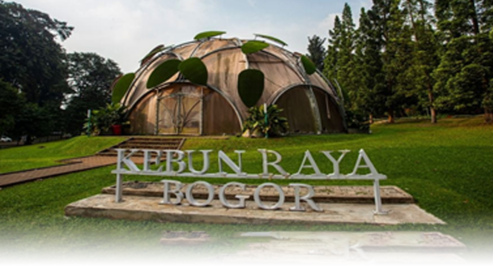
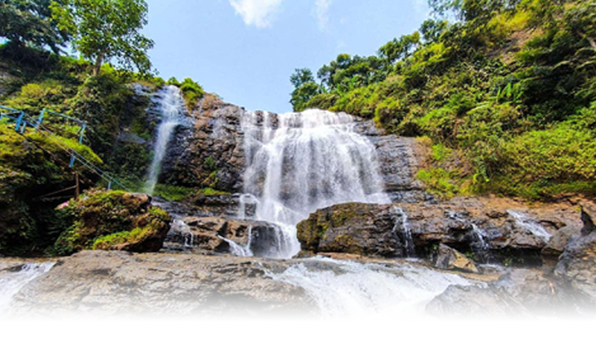
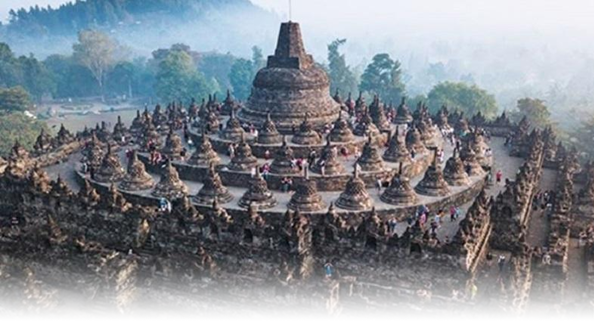
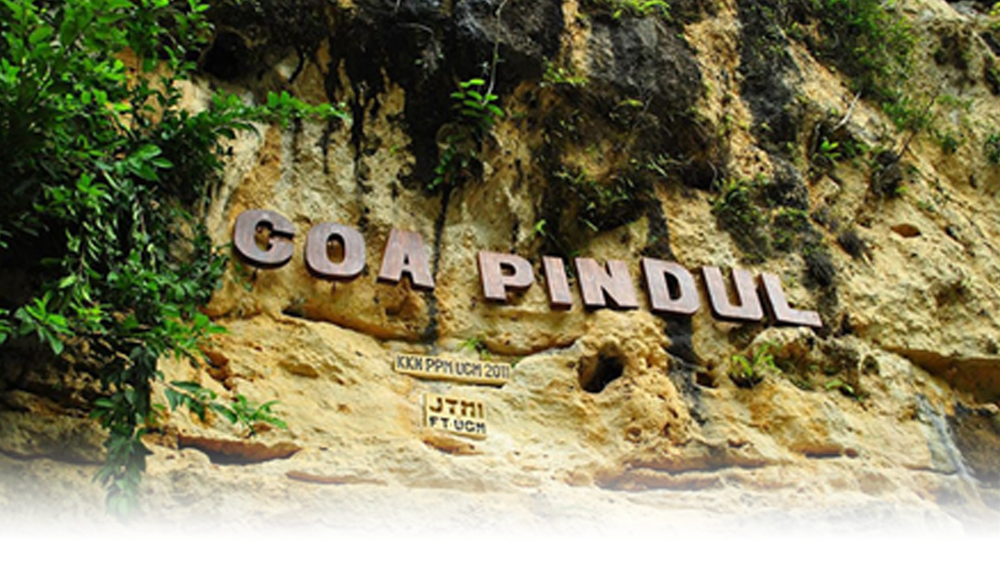
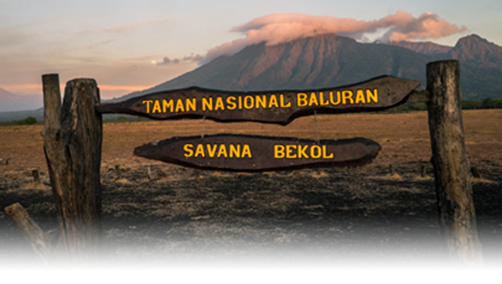
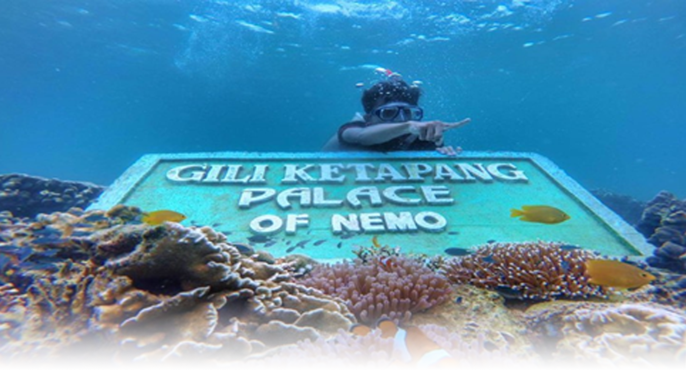
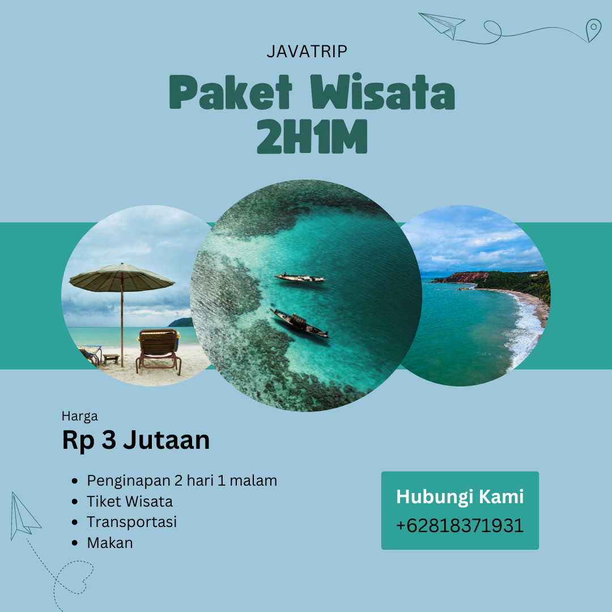
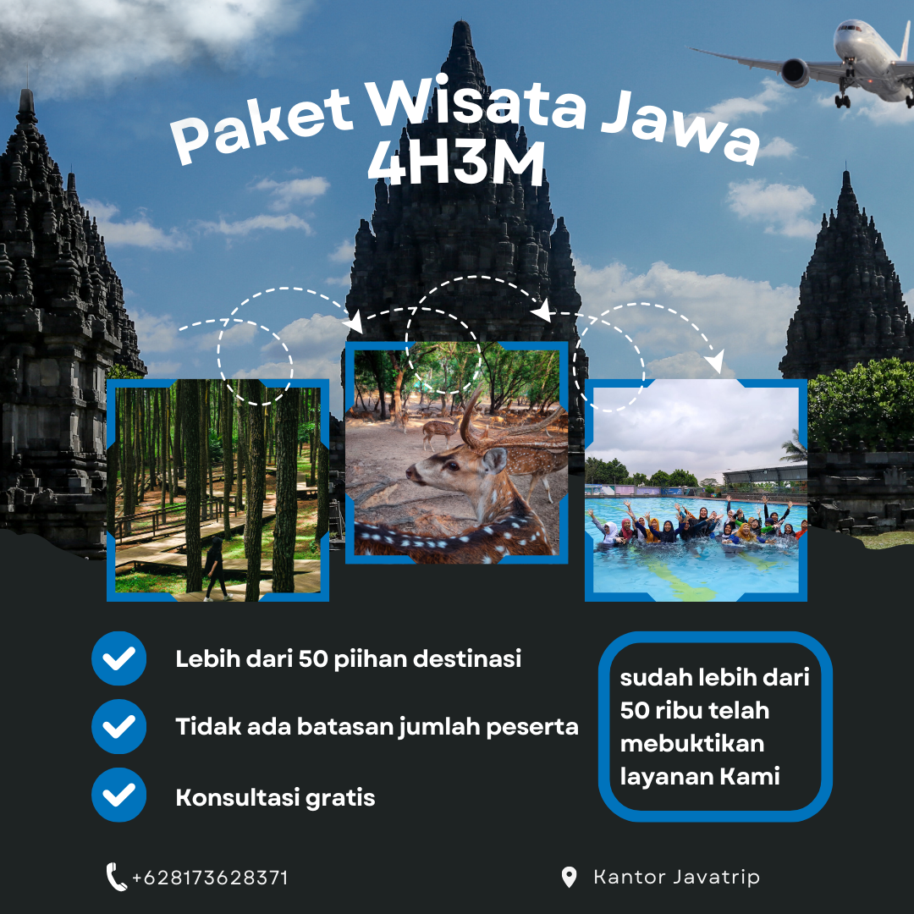
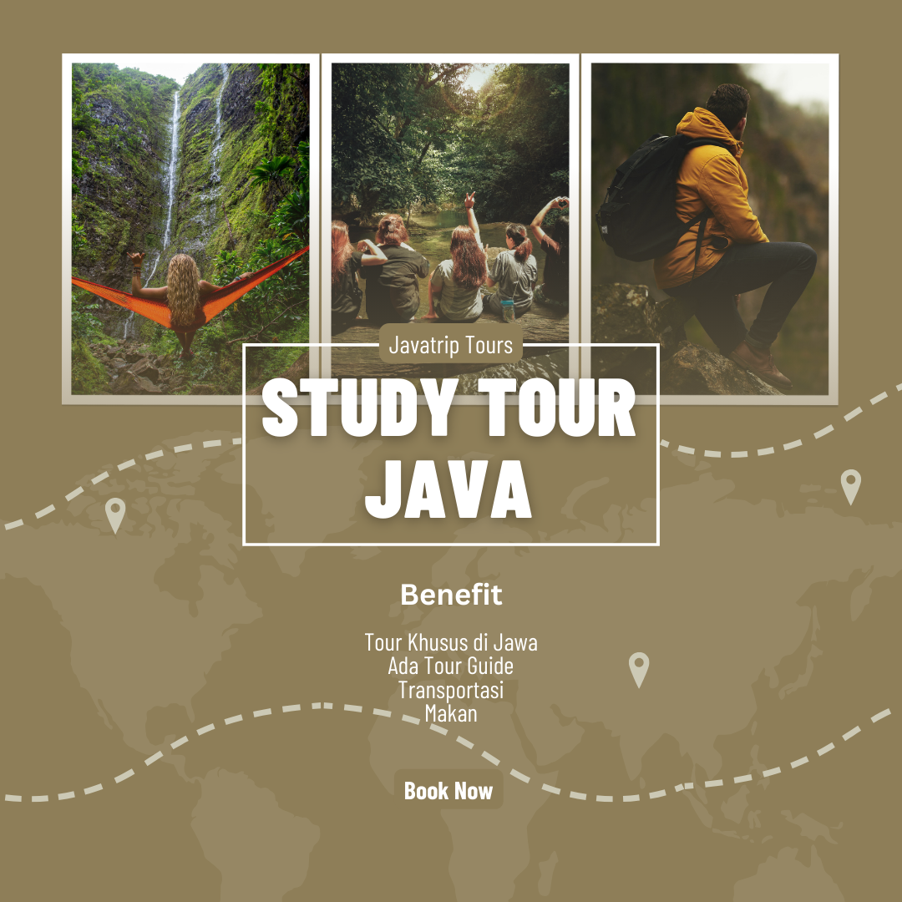
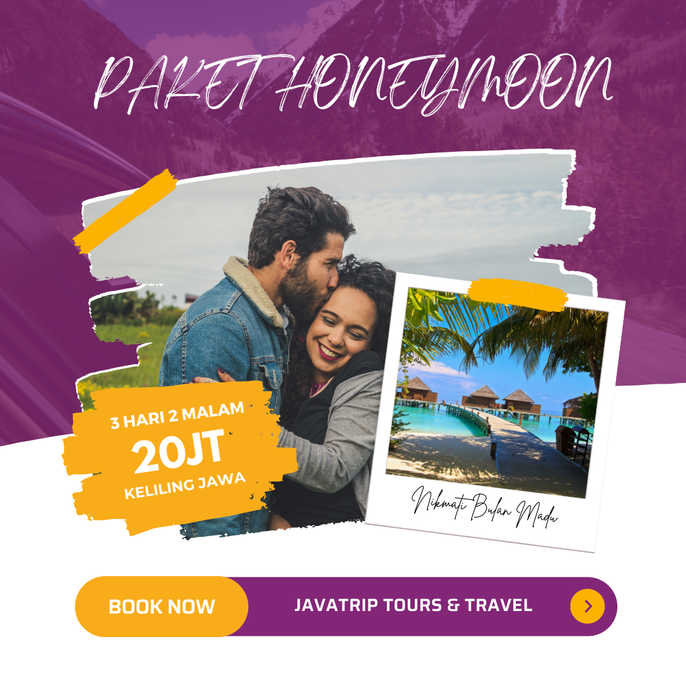

Kebun Raya Bogor merupakan kebun botani yang berada di Kota Bogor, Jawa Barat. Tempat ini sering dijadikan alternatif liburan keluarga karena alamnya yang terjaga. Selain keluarga banyak juga lho anak muda serta rombongan anak sekolah yang menjadikan Kebun Raya Bogor sebagai tempat rekreasi sambil belajar. Kebun Raya Bogor juga dikenal sebagai tempat pengembakbiakan bunga rafflesia. Bunga jenis ini dikenal sulit dikembangbiakkan karena penyerbukannya sangat sulit dilakukan. Selain menjadi rumah bagi bunga raflesia, ternyata Kebun Raya Bogor juga menjadi rumah bagi spesies anggrek terbesar di dunia, lho. Anggrek itu bernama anggrek raksasa atau sering disebut anggrek harimau dengan bahasa ilmiahnya bernama grammatophyllum speciosum.

Tentang Kami
Perusahaan yang bergerak di bidang travel dan Event Organizer di bidang Pelaksanaan Wisata. Yang Telah berdiri sejak tahun 2024 dan sudah melayani perjalanan di seluruh jawa

Pilihan Wisata

Kebun Raya Bogor
Bogor, Jawa Barat
Kebun Raya Bogor merupakan kebun botani yang berada di Kota Bogor, Jawa Barat. Tempat ini sering dijadikan alternatif liburan keluarga karena alamnya yang terjaga...
Baca Selengkapnya

Curug Cikondang
Cirebon, Jawa Barat
Curug Cikondang. Menjajakan panorama menakjubkan dari niagara mini versi bumi Parahyangan dan air terjun ini mirip dengan air terjun raksasa Niagara di Amerika Utara...
Baca Selengkapnya

Candi Borobudur
Yogyakarta, Jawa Tengah
Candi Borobudur adalah salah satu situs budaya di Indonesia, terletak di Yogyakarta, Jawa Tengah. Candi ini adalah candi Buddha terbesar di dunia dan merupakan warisan sejarah...
Baca Selengkapnya

Goa Pindul
Yogyakarta, Jawa Tengah
Goa Pindul Gunung Kidul ini akan menawarkan aktivitas yang dimana akan membutuhkan cukup keberanian yaitu cave tubing dan juga berbagai pemandangan stalaktit yang sangat indah...
Baca Selengkapnya

Taman Nasional Baluran
Banyuwangi, Jawa Timur
Taman Nasional Baluran Terletak di Kabupaten Situbondo Banyuwangi Jawa timur dan kamu akan menemukan lanskap alam yang menyerupai hutan tropis yang lebat dengan barisan pepohonan...
Baca Selengkapnya

Gili Ketapang
Banyuwangi, Jawa Timur
Disini kamu akan menemukan pantai yang cantik dan area snorkeling yang masih dipenuhi ikan-ikan kecil termasuk Ikan Giru yang lucu seperti di film Finding Nemo...
Baca SelengkapnyaPilihan Paket

Paket 2H1M
Paket Keliling Jawa dengan waktu 2 Hari 1 Malam
Rp.3.000.000,00

Paket 4H3M
Paket Keliling Jawa dengan waktu 4 hari 3 Malam
Rp.6.000.000,00

Paket Studytour
Paket Keliling Jawa untuk para Murid atau Mahasiswa
Rp.50.000.000,00

Paket Bermadu
Paket yang sesuai untuk kamu yang baru nikah dan pengen Keliling Jawa
Rp.20.000.000,00